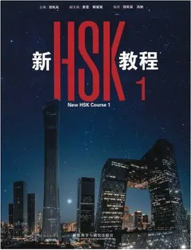
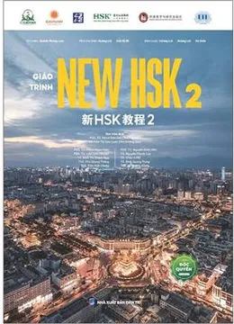
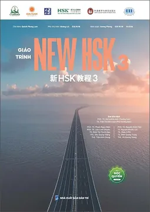

Cô Thảo tiếng Trung
Học đúng trọng tâm, dùng được ngay – từ người mới bắt đầu đến tiếng Trung công việc.
Lê Phương Thảo
Giảng viên tiếng Trung / Biên–phiên dịch doanh nghiệp
Cử nhân Tiếng Trung loại Giỏi, tốt nghiệp Đại học Mở Hà Nội năm 2022. Đi dạy từ năm 2022, bốn năm đứng lớp và làm việc trực tiếp với lãnh đạo Trung Quốc, Đài Loan, nên bài học luôn bám sát tình huống thật.
Trình độ hiện tại HSK 6 · HSKK Cao cấp
Liên hệ cô Thảo để tư vấn →Hành trình
Năng lực giảng viên
Cử nhân Tiếng Trung loại Giỏi, Đại học Mở Hà Nội (2022)
HSK 6, HSKK Cao cấp, tiếng Anh B2
Chứng chỉ nghiệp vụ sư phạm, đào tạo CTCSOL
4 năm kinh nghiệm, trực tiếp vận hành các lớp tiếng Trung với 40–50 học viên đang theo học.
Bồi dưỡng chuyên môn tại Vân Nam, Trung Quốc (2026), đạt danh hiệu Học viên ưu tú; đào tạo giáo viên, trợ giảng và xây dựng video đào tạo tiếng Trung cho doanh nghiệp.
Biên–phiên dịch từ năm 2021, tham gia đàm phán và làm việc với lãnh đạo Trung Quốc, Đài Loan trong nhiều lĩnh vực.
Xây dựng kênh TikTok Thảo Tiếng Trung, chia sẻ kiến thức và phương pháp học tiếng Trung thực tế.
Khóa học (khung mới HSK 3.0)
Thẻ khóa học
Giáo trình · Tổng quan New HSK (3.0) cấp độ 1, 2, 3
Bộ giáo trình mới biên soạn bám sát chuẩn HSK 3.0, bài học dùng hội thoại tình huống đời sống, kèm tài liệu số (audio, video, bài giảng). Cô kết hợp thêm tài liệu biên soạn riêng.
🟢 New HSK 1 (Sơ cấp 1)

15 bài học (mỗi bài 3–4 bài khóa tình huống)~300 từ vựng cốt lõi~40 điểm ngữ pháp trọng tâm
- Bảng âm Pinyin và quy tắc viết chữ Hán cơ bản.
- Giao tiếp nhập môn: chào hỏi, giới thiệu bản thân, quốc tịch, hỏi tuổi, ngày tháng, thời gian.
- Sinh hoạt hàng ngày: mua sắm, ăn uống, gọi món, đi lại, bắt xe, miêu tả thời tiết và sức khỏe đơn giản.
🟡 New HSK 2 (Sơ cấp 2)

15 bài học~200 từ mới (tích lũy 500 từ)~45 điểm ngữ pháp nâng cao
- Mở rộng ngữ cảnh giao tiếp công sở và đời sống xã hội.
- Cấu trúc ngữ pháp cốt lõi: câu so sánh (比), câu chữ 把, câu bị động (被), bổ ngữ kết quả, thời lượng, tần suất.
- Chủ đề ứng dụng: đặt lịch hẹn, trải nghiệm du lịch, miêu tả thói quen, trao đổi công việc, đi khám bệnh.
🔴 New HSK 3 (Trung cấp 1)

18 bài học~500 từ mới (tích lũy 1.000 từ)~63 điểm ngữ pháp phức hợp
- Giao tiếp đa ngữ cảnh trong đời sống, học tập và làm việc tại Trung Quốc.
- Câu phức nâng cao: nguyên nhân – kết quả (因为…所以…), giả định (如果…就…), điều kiện (只要…就…), tăng tiến (不但…而且…).
- Chủ đề ứng dụng: thảo luận công việc, phỏng vấn, thuê nhà, sự cố sân bay/du lịch, biểu đạt quan điểm và giải quyết vấn đề.
Hình thức học
Lớp học · Đánh giá · Chứng chỉ
Học tiếng Trung
Từ mẫu. Từ vựng đầy đủ theo bài sẽ bổ sung khi có dữ liệu.
Bộ thủ tiếng Trung
30 bộ thông dụng
Học từng bộ: ý nghĩa, ví dụ, chữ thường gặp.
Sắp ra mắt60 bộ thủ
Mở rộng sau khi xong 30 bộ đầu.
Sắp ra mắtHướng dẫn viết
Thứ tự nét và cách viết từng bộ.
Sắp ra mắtÔn tập bộ thủ
Bài ôn và kiểm tra sau mỗi nhóm bộ.
Sắp ra mắtPhiên âm cơ bản
Thanh mẫu
Sắp ra mắtVận mẫu
Sắp ra mắtThanh điệu
Sắp ra mắtGhép vần & luyện đọc
Sắp ra mắtHSKK – Luyện thi nói
Sơ cấp
Sắp ra mắtTrung cấp
Sắp ra mắtCao cấp
Sắp ra mắtGame ôn từ
🐝 Vườn Chữ Ong Vàng
HSK1 3.0 · Bài 1–15 và 10 chủ đề bổ trợ. Bài test nhanh và 4 trò chơi nhớ mặt chữ Hán, có meme vui.
Mở trò chơi →🌸 Thử thách từ vựng HSK5
Ôn đề thi thật HSK5 (H51221, H51222): phân biệt 11 cặp từ dễ nhầm, 43 từ trọng tâm, 3 trò ôn tập và bài test gõ phiên âm.
Mở trò chơi →🌼 Thử thách HSK5 · Đề 3
Từ trọng điểm đề H51223: luyện điền từ vào đoạn văn, chọn câu đúng, flashcard 4 chủ đề × 30 từ có liên kết.
Mở trò chơi →🐝 Vườn Chữ Ong Vàng · HSK2
HSK2 3.0 · Bài 1–3. Bài test nhanh và 4 trò chơi nhớ mặt chữ Hán, có meme vui.
Mở trò chơi →Sổ tay
📗 Dành cho học viên
Sắp ra mắt
📘 Dành cho giáo viên
Sắp ra mắt – ảnh bìa và giá sẽ cập nhật